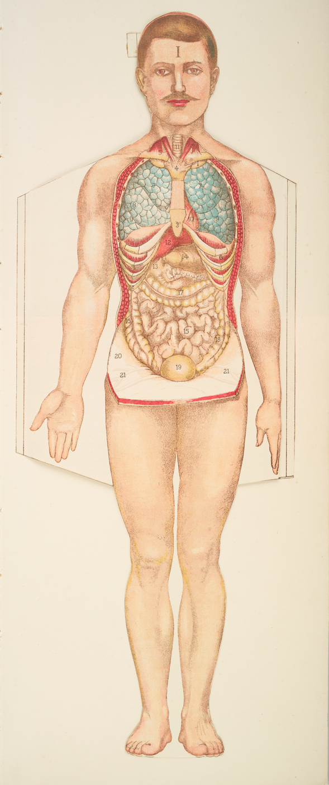

Artifacts Go Here

Should probably talk to one of the librarians or do some research. Ideally a librarian could supply a paragraph or two about the different folios.
I don't actually remember what this page was supposed to be for. Maybe talking about the Medical Archives and the Wired! Lab?